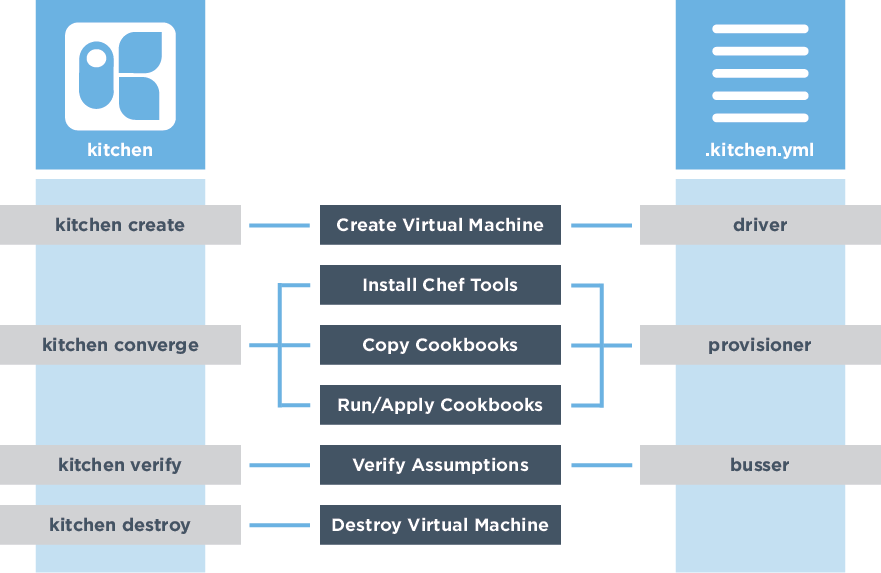
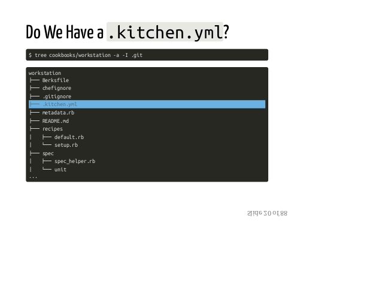
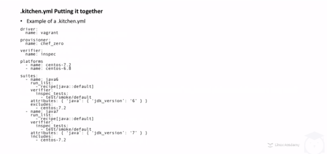
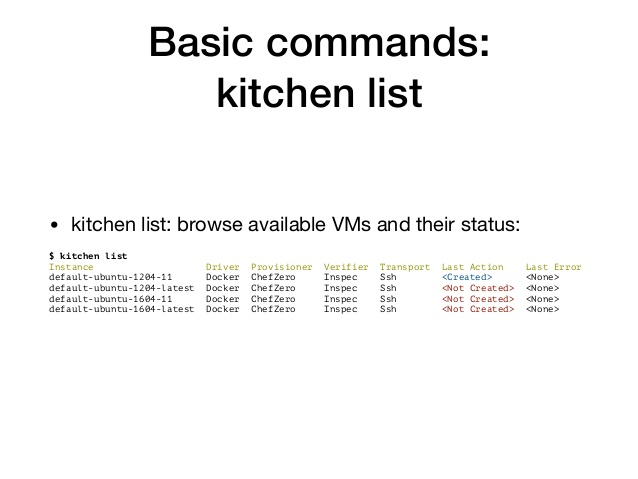

Can You Test Cookbooks?
As you start to define your infrastructure as code, you also need to start thinking about testing it.
Code Testing
An automated way to ensure code accomplishes the intended goal and help the team understand its intent.
Steps to Verify Cookbooks
• Create virtual machine
• Install chef tools
• Copy cookbooks
• Run/apply cookbooks
• Verify assumptions
• Destroy virtual machine
Test Kitchen Commands and Configuration

.kitchen.yml


When chef generates a cookbook, a default .kitchen.yml is created.
It contains kitchen configuration for the driver, provisioner, platform, and suites.
Kitchen Commands
In the SSH client, run this command to show details of the kitchen setup:
kitchen list

Run this command to create the test kitchen vm:
kitchen create
Run this command to install chef into the test kitchen vm:
kitchen converge
Run this command to log in to the test kitchen vm:
kitchen login
Run this command to run InSpec tests in the test kitchen vm:
kitchen verify
Run this command to delete the test kitchen vm:
kitchen destroy
InSpec
InSpec tests the actual state of your servers by executing commands locally, via SSH, via WinRM, via Docker API, etc.